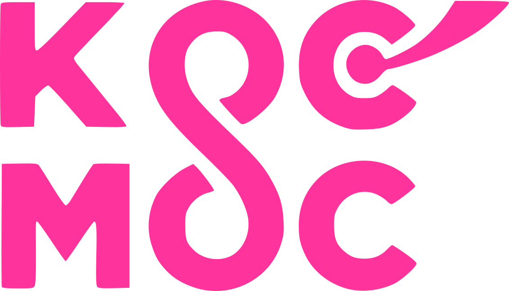

Горище Хорива
Арт-клуб
Третій гепенінг від арт-клубу «Горище Хорива».
Зберемось разом 100 людей, аби прожити 1 астрономічну літню ніч серед безмежних просторів космосу.
Тут, у лісі - свій світ, у якому вже не діють закони держави та норми та звичаї, вироблені суспільством.
Це царство природи, і почуття тут розкуті, вони виявляються з максимальною свободою.
Зберемось разом 100 людей, аби прожити 1 астрономічну літню ніч серед безмежних просторів космосу.
Тут, у лісі - свій світ, у якому вже не діють закони держави та норми та звичаї, вироблені суспільством.
Це царство природи, і почуття тут розкуті, вони виявляються з максимальною свободою.
12 червня 2020
19:00 – 19:40 – Антон Очеретяний (Lo-fi, hip-hip на семплері Roland sp404)
19:40 – 20:40 – Dari (сонячний funky-soul з мотивами лагідного old school 90ies pop)
20:40 – 21:20 – Аммуна Дабра і Тарас Коломацький (live)
21:20 – 21:50 – "Чумний лікар" перформанс
21:50 – 23:00 – Fruji (Andrew Askryotkov)
23:00 – 23.40 – Перформанс "Dookhі", хореографічне дійство про дуальність жіночої душ
23:40 – Перформанс "Танець світла"
23:40 – Хрестовий перформанс
З 23.40 – починається нічна сцену внизу
Гратимуть sopromat, unrealroman, batozsky
23.40 – 3.00 – танці
00:00 – да буде світло всюди! [ландашафтна арт-інсталяція]
00:30 – 02:30 – канц "Каждый день" в Підвалі. Фанк, реггі, боссанова . Потім Джем
3:00 – 3.30 – BROdsky live / поетична меса Maria & Magdalena & Sheetel
3.30 – … танці
04:20 – 04:50 – ранкове чайне дійство від Насті Ходуліної
19:00 – 19:40 – Антон Очеретяний (Lo-fi, hip-hip на семплері Roland sp404)
19:40 – 20:40 – Dari (сонячний funky-soul з мотивами лагідного old school 90ies pop)
20:40 – 21:20 – Аммуна Дабра і Тарас Коломацький (live)
21:20 – 21:50 – "Чумний лікар" перформанс
21:50 – 23:00 – Fruji (Andrew Askryotkov)
23:00 – 23.40 – Перформанс "Dookhі", хореографічне дійство про дуальність жіночої душ
23:40 – Перформанс "Танець світла"
23:40 – Хрестовий перформанс
З 23.40 – починається нічна сцену внизу
Гратимуть sopromat, unrealroman, batozsky
23.40 – 3.00 – танці
00:00 – да буде світло всюди! [ландашафтна арт-інсталяція]
00:30 – 02:30 – канц "Каждый день" в Підвалі. Фанк, реггі, боссанова . Потім Джем
3:00 – 3.30 – BROdsky live / поетична меса Maria & Magdalena & Sheetel
3.30 – … танці
04:20 – 04:50 – ранкове чайне дійство від Насті Ходуліної
Горище Хорива знаходиться в лісі
між Подолом та Татаркою.
Вхід за адресою – Кирилівська 53.
між Подолом та Татаркою.
Вхід за адресою – Кирилівська 53.
Ти
у головній ролі

Нічого не міняється. Ти знову - актор(ка), і глядач(ка), і режисер(ка).
У тебе головна роль. І так буде завжди. Бо в цьому і є вся магія. Коли всі приходять зі своїми фарбами - та змішують їх. Відкриваються та відкривають.
Придумай свій прикид, або просто приходь з цікавими історіями. Візьми з собою чашку свою або кухоль.
Захопи щось подарувати.
Почитай Маніфест Космос табору.
У тебе головна роль. І так буде завжди. Бо в цьому і є вся магія. Коли всі приходять зі своїми фарбами - та змішують їх. Відкриваються та відкривають.
Придумай свій прикид, або просто приходь з цікавими історіями. Візьми з собою чашку свою або кухоль.
Захопи щось подарувати.
Почитай Маніфест Космос табору.
Аммуна Дабра і Тарас Коломацький (live)
Акустична музика як дороговказ, інструмент синхронізації з собою. Пісня, як саундтрек до теми зростання колективної свідомості.
20:40 - 21:20
instagram.com/ah_moona/
20:40 - 21:20
instagram.com/ah_moona/
Перформанс "Dookhі"
хореографічне дійство про дуальність жіночої душ
Це перформанс від 4 українських танцівниць Слободянюк Христини, Олександри Магери, Дани Сарман та Марії Потапенко. Під акомпанемент музиканта Дмитра Стояна.
"Dookhi" - це заворожливе дійство про дуальність жіночої душі. Про магію носієм якої споконвіку була і є кожна жінка. Про відьом та фей, про стихійність та силу, про красу, життя та вічність.
Натхненні балетами "Жизель" та власне п'єсою Шекспіра "Сон літньої ночі", танцівниці вирішили представити своє бачення надприродного. Лише рух та музика, бо слова тут зайві - духів можуть побачити тільки ваші душі.
23:00 - 23.40
"Dookhi" - це заворожливе дійство про дуальність жіночої душі. Про магію носієм якої споконвіку була і є кожна жінка. Про відьом та фей, про стихійність та силу, про красу, життя та вічність.
Натхненні балетами "Жизель" та власне п'єсою Шекспіра "Сон літньої ночі", танцівниці вирішили представити своє бачення надприродного. Лише рух та музика, бо слова тут зайві - духів можуть побачити тільки ваші душі.
23:00 - 23.40
Антон Очеретяний
Lo-fi музика, hip-hip
Музику буде вручну створювати live на семплері Roland sp404.
Антон учасник проєкту Ragapop, для якого пише музику. Обов'язково послухайте композицію "Гордості" - youtube.com/watch?v=6CV0VBpNduY
О 19:00 Антон відкриває "Сон літньої ночі".
19:00 – 19:40
Ласкаво просимо у світ гіпнотичного біту, що колихатиме, неначе хвилі моря!
instagram.com/tosha_987/
Антон учасник проєкту Ragapop, для якого пише музику. Обов'язково послухайте композицію "Гордості" - youtube.com/watch?v=6CV0VBpNduY
О 19:00 Антон відкриває "Сон літньої ночі".
19:00 – 19:40
Ласкаво просимо у світ гіпнотичного біту, що колихатиме, неначе хвилі моря!
instagram.com/tosha_987/
Візуально музичний ритуал
«Чумний доктор»
«Чумний доктор»
Кожна дія має сенс і впливає на іншу ,кожний звук є вписаний у фугу життя. Свідомий поворот голови, заплющеня ока, вдих, видих.
Почути рух , Побачити звук. Очищення через свідомі дії та свідоме спостереження за ними .
Перформи - Руденко Володимир, Астхік Григорян, Надія Голубцова , Христина Слободянюк
21:20 - 21:50
instagram.com/rudenko.wow/
Почути рух , Побачити звук. Очищення через свідомі дії та свідоме спостереження за ними .
Перформи - Руденко Володимир, Астхік Григорян, Надія Голубцова , Христина Слободянюк
21:20 - 21:50
instagram.com/rudenko.wow/
BROdsky live / поетична меса Maria & Magdalena & Sheetel
Поетична меса за поезією Бродського Йосипа.
Колаборації Марусі Іонової та Надії Голубцової (ЦеШо, ДАХ) разом з Антоном Шителем (Sheetel & the Good Stuff).
"BROdsky live" - це крутий крафтовий продукт, народжений серед подільських вулиць. Змога зануритися у змісти та стани, котрі можуть по-іншому впускати світ всередину.
03:00 - 03:30
Марія - instagram.com/marusia_io
Магдалина - instagram.com/golubtsova.nadezhda
Sheetel - instagram.com/antonsheetel/
"BROdsky live" - це крутий крафтовий продукт, народжений серед подільських вулиць. Змога зануритися у змісти та стани, котрі можуть по-іншому впускати світ всередину.
03:00 - 03:30
Марія - instagram.com/marusia_io
Магдалина - instagram.com/golubtsova.nadezhda
Sheetel - instagram.com/antonsheetel/
Перформанс "Танець світла"

Підсвітимо всю територію - будинок, дерева, каміння, кущі. Всю священну гору, де розкрилось Горища Хорива.
Світло буде з'являтися плавно, у взаємодії з музикою та рухом. Усі охочі вливаються та стають частиною процесу.
Куратор перформансу та художниця з освітлення - Астхік Григорян.
23:40 - 00:00
instagram.com/asthik_tigranovna/
Світло буде з'являтися плавно, у взаємодії з музикою та рухом. Усі охочі вливаються та стають частиною процесу.
Куратор перформансу та художниця з освітлення - Астхік Григорян.
23:40 - 00:00
instagram.com/asthik_tigranovna/
Хрестовий перформанс
вбудований у "Танець світла"

8 травня у нас було Священне Відкриття Горища Хорива.
І тоді ми встановили на даху Горища Дерев'яний Хрест.
Тепер настав час еволюціонувати. І ставити Новий Хрест.
Руслан заморочився і зробив супер конструкцію з пластика, кутиків, шурупчиків. Витратив на це понад 80 людино/годин.
Астхік підсобить йому зі світлом - це буде ціла артова інсталяція на даху Горища, висотою понад 2,5 метра, і буде дуже добре з Подолу видно.
Руслан підійматиме його, і ми всі станемо свідками як засяє Новий Хрест над Горищем!
23:40 - 00:00
instagram.com/iamfilipchukruslan
І тоді ми встановили на даху Горища Дерев'яний Хрест.
Тепер настав час еволюціонувати. І ставити Новий Хрест.
Руслан заморочився і зробив супер конструкцію з пластика, кутиків, шурупчиків. Витратив на це понад 80 людино/годин.
Астхік підсобить йому зі світлом - це буде ціла артова інсталяція на даху Горища, висотою понад 2,5 метра, і буде дуже добре з Подолу видно.
Руслан підійматиме його, і ми всі станемо свідками як засяє Новий Хрест над Горищем!
23:40 - 00:00
instagram.com/iamfilipchukruslan
Dari
Сонячний funky-soul з мотивами лагідного old school 90ies pop
в призахідний час
з балкону Горища Хорива
просто неба
на одному з легендарних схилів Києва
19:40 – 20:40
в призахідний час
з балкону Горища Хорива
просто неба
на одному з легендарних схилів Києва
19:40 – 20:40
dj Sopromat
Ді-джей, який може розпалити будь-яку вечірку, навіть похорон Авакова.
Підкидає в топку саме ті треки, від яких несеться як треба. Sopromat не просто грає, він вривається разом з усіма.
Почесний учасник Алкофіри у Дніпро на Dnipro ГогольFest у вересні 2019, він же і учасник нічної сцени.
instagram.com/sopromat.los/
https://soundcloud.com/sopromat_los/
зйомка документального кіно
8 травня 2020 відбулось відкриття Горища Хорива.
24.05 - денний гепенінг "Ноосфера".
З самого початку історії триває зйомка кіно – фіксація творчого акту та форм взаємодії, які навколо себе породжує Горище Хорива. Навколо процесу сформована команда з 7 фахівових людей, котрі включилися в процес та інвестують свої ресурси та техніку.
12 червня знімаємо третій блок матеріалу. Будьте готові потрапити в об'єктив кінокамер.
24.05 - денний гепенінг "Ноосфера".
З самого початку історії триває зйомка кіно – фіксація творчого акту та форм взаємодії, які навколо себе породжує Горище Хорива. Навколо процесу сформована команда з 7 фахівових людей, котрі включилися в процес та інвестують свої ресурси та техніку.
12 червня знімаємо третій блок матеріалу. Будьте готові потрапити в об'єктив кінокамер.
"Каждый день"
Фанк, реггі, боссанова
Це ті джентельмени, що розносили "Хаіперлуп" в найдовшому підземному переході Подолу. Легендарна була вечірка)
Дуже харизматична та енергійна команда. Так вкачують, що ніби портал в інший світ відкривається.
Тепер вони завітають на "Сон літньої ночі" .
Після опівночі візьмуть опіку над Підвалом Горища Хорива - саме там і буде нестися спочатку їх концерт, а потім музичний джем.
Дуже харизматична та енергійна команда. Так вкачують, що ніби портал в інший світ відкривається.
Тепер вони завітають на "Сон літньої ночі" .
Після опівночі візьмуть опіку над Підвалом Горища Хорива - саме там і буде нестися спочатку їх концерт, а потім музичний джем.
dj Fruji (Andrew Askryotkov)
«Дуже надихнуло це чарівне місце, і звук - прекрасний інструмент, аби поділитися своїми враженнями і настроєм. Подобаються ламані ритми та веселитися» - Андрій.
21:50 - 22:50
instagram.com/askrjotkov_a/
21:50 - 22:50
instagram.com/askrjotkov_a/
Бар Остапа та Ігоря
Вони дружать з 12 серпня 2010 року.
Зазвичай ми можете зустріти їх у Світі кави, де вони офер смачно фаусують порції кофеїну.
Але окрім кави хлопці ще люблять розкривати алкоголь. Колекціонувати, вичепляти хороші пляшки за крутими пропозиціями. Підбирати інгридієнти, робити коктичі.
Німецька точність та холоднокровність, з якою їбашать "Перше причастя" чи "Дзьобаний прийом" свої фірмові
Аби запустити на Горищі Хорива бар свій перший - хлопці взяли ліжко Ігоря , яке вірно прослужило 2 роки, та трансформували його в барну стійку.
instagram.com/i_ostapchuk_/
instagram.com/ostapsokil/
Зазвичай ми можете зустріти їх у Світі кави, де вони офер смачно фаусують порції кофеїну.
Але окрім кави хлопці ще люблять розкривати алкоголь. Колекціонувати, вичепляти хороші пляшки за крутими пропозиціями. Підбирати інгридієнти, робити коктичі.
Німецька точність та холоднокровність, з якою їбашать "Перше причастя" чи "Дзьобаний прийом" свої фірмові
Аби запустити на Горищі Хорива бар свій перший - хлопці взяли ліжко Ігоря , яке вірно прослужило 2 роки, та трансформували його в барну стійку.
instagram.com/i_ostapchuk_/
instagram.com/ostapsokil/
unrealroman
Випускник музичного Гоґвортсу, магістр перкусій і майстер бочки . Молодий дігер зі столиці, на якого покладають великі надії, бурхливим вітром несе свої дисонуючі і романтичні сонети, що проникають прямо в душу навіть «прошареному» слухачеві .
В своїх сетах поєднює house, techno, trance, disco i breakbeat.
Його виступи можна почути на багатьох вечірках у Києві, тепер вдруге завітає на Горище Хорива.
https://instagram.com/unrealroman
https://soundcloud.com/unrealroman
В своїх сетах поєднює house, techno, trance, disco i breakbeat.
Його виступи можна почути на багатьох вечірках у Києві, тепер вдруге завітає на Горище Хорива.
https://instagram.com/unrealroman
https://soundcloud.com/unrealroman
batozsky (Нікіта Батозський)

Куратор електро сцени Горища Хорива, відіграв з балкону 2/2 гепенінги.
Музичний ентузіаст, діджей.
На суботню ніч готує сет з брейкбіту, хаусу та електро.
Живе та прописаний на Подолі.
https://www.instagram.com/funky_william
Музичний ентузіаст, діджей.
На суботню ніч готує сет з брейкбіту, хаусу та електро.
Живе та прописаний на Подолі.
https://www.instagram.com/funky_william
вогнище

Просто розведемо на території місце, де завжди палахкотітиме.
Бо це круто інколи дивитися на полум'я відкритого вогню, а де його в місті зустрінеш?
А вогню хочеться. Як хочеться часом дивитися на воду.
Ми ж влаштовані по тим самим принципам, що і природа навколо. І маємо в собі ті самі структури, подібні форми.
Вогнище - як щось справжнє і вічне.
Бо це круто інколи дивитися на полум'я відкритого вогню, а де його в місті зустрінеш?
А вогню хочеться. Як хочеться часом дивитися на воду.
Ми ж влаштовані по тим самим принципам, що і природа навколо. І маємо в собі ті самі структури, подібні форми.
Вогнище - як щось справжнє і вічне.
Бесідка "Все по 1 євро"
Божественна жінка Юлія ака Рудий Ед готує супер смаколики самостійно своїми руками все.
Будуть веганські хот-доги (сосиска між хлібом смаженим під пресом) з овочами.
Два види напоїв ягідний і пряний, з її джином або без. На відео - трошки бекстейджу зі створення джину на "Сон літньої ночі" 12.06
instagram.com/elisapeyron/
Будуть веганські хот-доги (сосиска між хлібом смаженим під пресом) з овочами.
Два види напоїв ягідний і пряний, з її джином або без. На відео - трошки бекстейджу зі створення джину на "Сон літньої ночі" 12.06
instagram.com/elisapeyron/
чайне дійство на світанку
Настя Ходуліна проведе чайне дійство з китайським або тайванським чаєм - в мить, коли наш бік планети знову відкриється промінням Сонця.
Настя два роки прожила в Азії, де зустріла багато зовншініх та внутрішніх змін, але завжди з піалою в руках.
Вдалось обійняти чайні дерева в Юньнані. Навчалась в GlobalTeaHut на Тайвані. Останній рік передає красу предметів та магію чайного листа в проекті EvaArtTea.
Настя два роки прожила в Азії, де зустріла багато зовншініх та внутрішніх змін, але завжди з піалою в руках.
Вдалось обійняти чайні дерева в Юньнані. Навчалась в GlobalTeaHut на Тайвані. Останній рік передає красу предметів та магію чайного листа в проекті EvaArtTea.
Pasta la Pepito
Смачна паста для хороших людей , і по карману - позиціонування і сервіс супер том.
Зазвичай хлопці працюють на Либідській площі - там у них своя кухня. Всю зиму вони годували ДАХівців - так і познайомились. Готують ахуєнні пасти, різотто, салати. При чому, заморочуються і пармезан, вершки, макарони - все з Італії.
Настільки смачно готують, що вже двічі поспіль закінчувалась кухня раніше за завершення вечірки. Цього разу пообіцяли бути з бандою подовше, не залишити без прекрасного пайку.
facebook.com/pastalapepito/
Зазвичай хлопці працюють на Либідській площі - там у них своя кухня. Всю зиму вони годували ДАХівців - так і познайомились. Готують ахуєнні пасти, різотто, салати. При чому, заморочуються і пармезан, вершки, макарони - все з Італії.
Настільки смачно готують, що вже двічі поспіль закінчувалась кухня раніше за завершення вечірки. Цього разу пообіцяли бути з бандою подовше, не залишити без прекрасного пайку.
facebook.com/pastalapepito/
КосмоДно
Спец локація, до якої прийшли в далекому червні 2016 році на Четвертому Космос таборі.
Тоді Дені Угорчук подав ідею викопать яму біля Бару Космос табору - і так кристалізувався новий простір, який дуже швидко обзавівся власним функціоналом , та спільнотою адептів КосмоДна.
З тих багато води збігло, багато сірки зшуміло - КосмоДно зазнавало змін, реформ, переіменуванням, переходу влади.
Але хай там що - завжди є незмінний завідуючим КосмоДна. Вірменська кров ганяє його жилами. Незмінний учасник КосмоДесанту з 2015 року. Спів-Архітектор Космос Табору 2020.
Валєра.
instagram.com/valera_inc/
Тоді Дені Угорчук подав ідею викопать яму біля Бару Космос табору - і так кристалізувався новий простір, який дуже швидко обзавівся власним функціоналом , та спільнотою адептів КосмоДна.
З тих багато води збігло, багато сірки зшуміло - КосмоДно зазнавало змін, реформ, переіменуванням, переходу влади.
Але хай там що - завжди є незмінний завідуючим КосмоДна. Вірменська кров ганяє його жилами. Незмінний учасник КосмоДесанту з 2015 року. Спів-Архітектор Космос Табору 2020.
Валєра.
instagram.com/valera_inc/
перформанс "ВідКа́дило"

Супер містичне дійство від Uncle Love.
Пост-модерн, як він є.
Переосмислення старих канонів та звичок на новий лад.
Змога полюбити кадило, побачити його, наблизитися без страху "можна чи не можна".
Шанс відчути свого бога, або демона.
Вдихо-візуальний перформанс
instagram.com/novohatskiyy/
Пост-модерн, як він є.
Переосмислення старих канонів та звичок на новий лад.
Змога полюбити кадило, побачити його, наблизитися без страху "можна чи не можна".
Шанс відчути свого бога, або демона.
Вдихо-візуальний перформанс
instagram.com/novohatskiyy/
== доєднатися
Days
Hours
Minutes
Seconds
УВАГА!
На території арт-клубу "Горище Хорива", як і у Космос таборі, НЕ БУДЕ одноразового посуду НІКОЛИ, відповідно вам потрібно подбати про багаторазовий посуд.
Щоб пити на барі – майте свою чашку, кухоль чи флягу.
Make Earth great again!
На території арт-клубу "Горище Хорива", як і у Космос таборі, НЕ БУДЕ одноразового посуду НІКОЛИ, відповідно вам потрібно подбати про багаторазовий посуд.
Щоб пити на барі – майте свою чашку, кухоль чи флягу.
Make Earth great again!
Click to order
Арт-клуб "Горище Хорива"
Total:

засновано спiльнотою Космос Табору